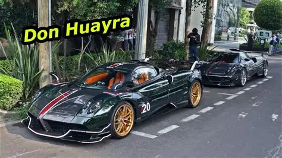
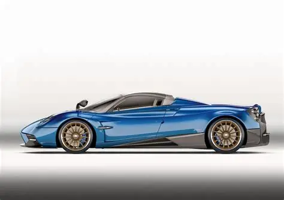
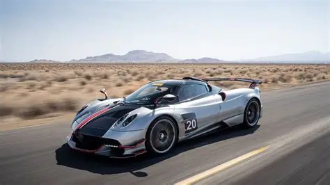

¿Qué es el Pagani Huayra?
El Pagani Huayra es un automóvil deportivo de altas prestaciones fabricado por la empresa italiana Pagani. Es reconocido por su diseño exclusivo, su tecnología y sus increíbles prestaciones. Su nombre proviene de Huayra Tata, una figura relacionada con el dios del viento en la cultura andina.

Diseño
El diseño del Pagani Huayra combina aerodinámica y elegancia. Su carrocería está fabricada utilizando materiales ligeros y resistentes. También cuenta con elementos aerodinámicos activos que ayudan a mejorar su comportamiento y estabilidad.
Motor y rendimiento
El Pagani Huayra utiliza un motor V12 biturbo desarrollado por Mercedes-AMG. Gracias a su potente motor y a su bajo peso, el automóvil puede alcanzar velocidades muy elevadas y ofrecer un gran rendimiento deportivo.

Justificación
Elegí el Pagani Huayra porque es un automóvil que destaca por combinar tecnología, diseño y rendimiento. Además, representa el trabajo artesanal de Pagani y demuestra cómo la ingeniería puede utilizar materiales modernos para crear vehículos de altas prestaciones.
Enlaces
Página oficial de Pagani Pagani Huayra